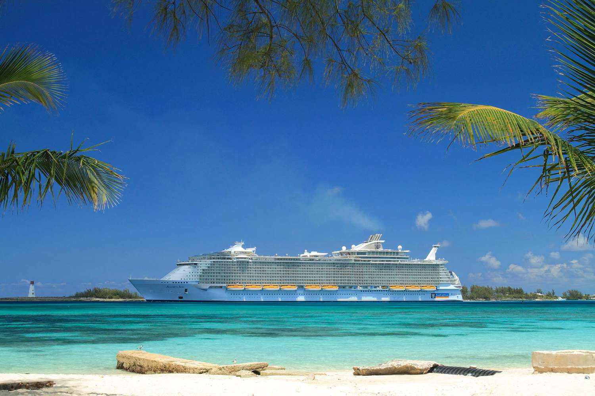

Mexico
Royal Caribbean Cruise
Near the end of September 2023, My family and I went on a cruise outside
the Gulf of Mexico. The Crusie Made several stops; in Honduras, Costa
Maya, and Cozumél. At each stop my family and I got off the boat to
explore.
In Honduras, we had a driver come to pick us up and we rode through all
the back roads of Honduras, looking at the scenery and the lifestyle of
the people who lived locally, as we came closer and closer to our
destination: a small school that taught the children in Honduras
English. Each night when my family and I arrived back at the ship, the
cruise ship was themed each night differently. One of the nights was a
fancy formal night. My younger sisters and I dressed up in fancy ball
gowns, (mine was red) and we took family pictures before going down to
the dining.
Mammy, Papa, Me, Ada, Michelle, Amber, Jason, Melony, James

In Honduras, we had a driver come to pick us up and we rode through all
the back roads of Honduras, looking at the scenery and the lifestyle of
the people who lived locally, as we came closer and closer to our
destination: a small school that taught the children in Honduras
English. Each night when my family and I arrived back at the ship, the
cruise ship was themed each night differently. One of the nights was a
fancy formal night. My younger sisters and I dressed up in fancy ball
gowns, (mine was red) and we took family pictures before going down to
the dining.
Me, Jason, Amber, Holly, Michelle, Ada